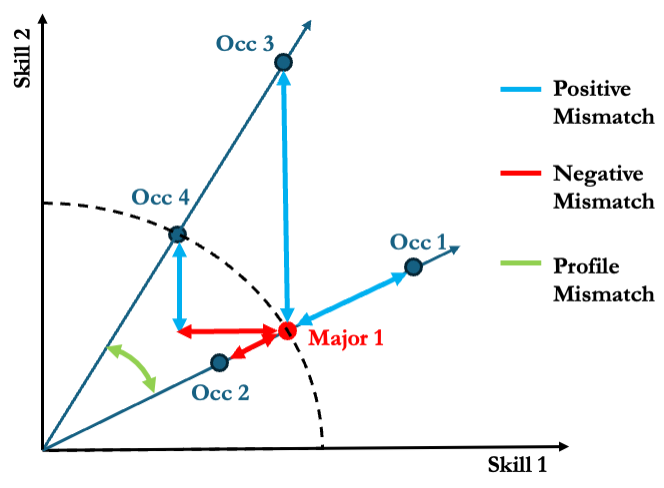
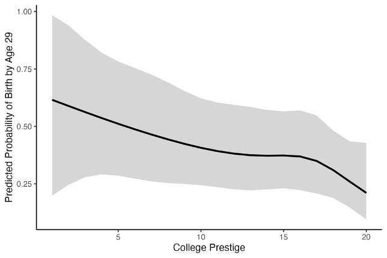
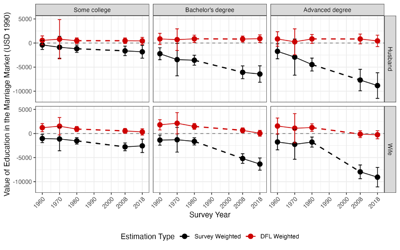

Higher education has expanded steadily across most developed nations. As more people pursue and earn college degrees, the heterogeneity in higher education and its implications for the life course have grown as well. My research tries to understand how these variations shape outcomes in the labor market and family formation.
Featured project
Multidimensional Skill-profiles of College Majors
My recent work develops a measurement framework that makes college majors and instructional programs in higher education comparable across multiple dimensions of skill. Select the skill dimension of interest and find your major among others!
Manuscript under review. The full version of the app, with the complete dataset, will be published later.
Subscribe for updates
Multidimensional Measure of Major-Occupation Mismatch
Click to see details
Prior research has consistently found that college graduates working in occupations mismatched with their college majors experience a wage penalty. Yet, this literature has relied on a match-mismatch dichotomy to study the major-occupation relationship that provides limited insight on how they are mismatched and why it shapes labor market outcomes. In a co-authored work, I use the skill-profile framework to compare majors and occupations across 120 dimensions of skill and distinguish three previously conflated forms of mismatch: positive mismatch, where an occupation demands more skill than a major signals; negative mismatch, where it demands less; and profile mismatch, where it requires a different combination of skills altogether.
Applying this to the 2009–2022 American Community Survey, I find that positive mismatch carries a wage premium, while negative and profile mismatch both carry penalties. This approach not only has substantially greater explanatory power than conventional matched/mismatched classifications, but also provides a nuanced understanding of the labor market processes and stratification.

College Selectivity and Fertility in the Early Adulthood
Click to see details
The literature's educational gradient in fertility compares degree-holders to non-holders, treating the college-educated as a uniform group — an assumption that's harder to sustain as institutions diversify. I ask whether fertility timing varies by institutional selectivity among women who hold the same four-year degree.
Using restricted Add Health data, I find women from the least selective institutions face roughly 2.6 times the risk of a first birth before age 30 compared to graduates of the most selective institutions, concentrated during the college years themselves rather than diverging career paths afterward — with no comparable gradient among men.

The Value of College Degree in the Marriage Market, 1960–2020
Click to see details
Sociologists agree education is central to partner selection but have rarely measured how much it's worth on a scale comparable across time. Building on Xie and Dong (2021), I propose a counterfactual estimand: how much spousal income would someone give up to marry a college graduate rather than a high school graduate?
Applying it to Census and ACS data, I find the exchange value of a bachelor's degree rose sharply in the twenty-first century — from roughly $2,000 in 1980 to over $6,500 today, in 1990 dollars — driven largely by widening income inequality across education levels; holding inequality at its 1960 level, men's degrees retain their value while women's decline.
Assessing the Impact of the Great Recession on the Transition to Adulthood
I study young adults who spend extended time disconnected from both school and work, proposing a cohort-comparison framework that isolates the unconfounded effect of the 2008 recession from age and cohort effects. Using the NLSY97, I find the recession increased disconnection for all young adults, but disadvantaged youth experienced disproportionate, lasting setbacks with little recovery.
Concerted Cultivation and Children's Academic Performance: The Role of School Adjustment
Concerted cultivation is theorized to boost academic achievement through cultural dispositions schools reward, but the mechanism is rarely tested directly. Using South Korean data and causal mediation analysis, I find school belongingness accounts for roughly half the effect of concerted cultivation on test scores — a placebo test with extracurricular education confirms this is a distinct, non-academic pathway.
Real-World Implications of a Methodological Dilemma: Endogenous Confounding in Causal Decomposition Analysis
Causal decomposition can estimate how much a hypothetical intervention would close a downstream inequality, but existing approaches simulate single-factor interventions and don't address how large an intervention needs to be. I propose a method that makes the targeted mechanisms and their required scale explicit, finding in the NLSY97 that only interventions addressing multiple schooling domains simultaneously meaningfully narrow the Black-White gap in disconnection.
Not Why I Went to College: Examining Motherhood Penalty in Major-Occupation Mismatch
Existing research documents how motherhood changes women's labor force participation and wages, but not whether it changes the fit between their education and their job. Using the NLSY97 and my mismatch framework, I find that employed mothers move into occupations that underuse or diverge from their major's skills — a shift fathers don't experience — suggesting indirect wage losses through occupational realignment after childbirth.
Vulnerable Majors, Resilient Majors: College Majors in the Era of Generative AI
[Description]
A Pet Project (On Pets!)
[Description]